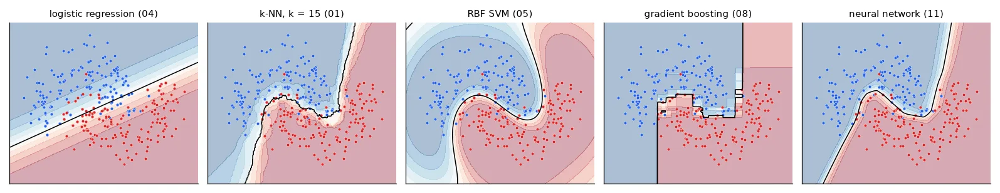

What you need#
- Python 3.10 or newer. Check with
python3 --version. - About 3 GB of disk space: PyTorch is the big one, and the datasets downloaded during the course take about 600 MB.
- No GPU required. Every lesson runs on a laptop CPU. Lessons 13–16 train neural networks and take from a few minutes to ~15 minutes on a CPU; with a CUDA GPU they run in seconds and the code uses it automatically. The one exception is the Stable Diffusion script of lesson 17, which needs a GPU (a free Google Colab session works).
Get the code#
Download ml-course-code.zip and unzip it:
ml-course/
├── mlutils.py # helpers: seeds, downloads, figures, plot_decision, train_classifier
├── requirements.txt
├── 01_knn_and_data_splits.py # one script per lesson
├── ...
├── 17_diffusion.py
├── 17b_stable_diffusion.py # needs a GPU
└── data/
├── mixtures/ # the INSA "mixture" dataset (2-D, two classes)
├── houses.csv # 18 house coordinates (optimisation lab)
├── rouen.jpg # a photo for clustering and detection
├── skate/ # Skate detection dataset (YOLO format, CC BY 4.0)
└── cache/ # created on first run: downloaded public datasets
Small files ship with the code; public datasets (UCI wine quality and spambase, LIBSVM splice, MNIST, Fashion-MNIST, California housing, forest cover types, EuroSAT, LFW faces…) are downloaded the first time a lesson needs them, into data/cache/, and reused afterwards.
Create an environment#
cd ml-course
python3 -m venv .venv
source .venv/bin/activate # Windows: .venv\Scripts\activate
pip install -r requirements.txt
numpy>=1.26
scipy>=1.11
pandas>=2.1
matplotlib>=3.8
scikit-learn>=1.4
cvxpy>=1.4
pillow>=10.0
torch>=2.2
torchvision>=0.17
ultralytics>=8.1
PyTorch: CPU or GPU build
On Linux, pip install torch installs a CUDA build of about 2 GB even on machines without a GPU. If you don't have one, install the much smaller CPU build first: pip install torch torchvision --index-url https://download.pytorch.org/whl/cpu, then the rest of the requirements. On a GPU machine, follow the selector on pytorch.org to match your CUDA driver.
Check that everything imports:
python -c "import sklearn, torch; print(sklearn.__version__, torch.__version__, torch.cuda.is_available())"
Your first run#
00_overview.py trains five of the model families you will build in this course on the same toy problem — two interleaved half-moons with noise — and draws what each one learnt:
X, y = make_moons(n_samples=600, noise=0.28, random_state=0)
Xtr, Xte, ytr, yte = train_test_split(X, y, test_size=0.5, random_state=0)
models = {
"logistic regression (04)": LogisticRegression(),
"k-NN, k = 15 (01)": KNeighborsClassifier(15),
"RBF SVM (05)": CalibratedClassifierCV(SVC(C=10, gamma=1), ensemble=False), # scores -> probabilities
"gradient boosting (08)": HistGradientBoostingClassifier(max_depth=3, random_state=0),
"neural network (11)": MLPClassifier((64, 64), max_iter=2000, random_state=0),
}
for name, m in models.items():
m.fit(Xtr, ytr)
print(f"{name:26s} test accuracy {m.score(Xte, yte):.3f}")
logistic regression (04) test accuracy 0.850
k-NN, k = 15 (01) test accuracy 0.890
RBF SVM (05) test accuracy 0.887
gradient boosting (08) test accuracy 0.890
neural network (11) test accuracy 0.897

Four very different models end up within one point of accuracy of each other: on this data the noise, not the model, limits what is possible. Only the straight line of logistic regression is clearly too simple. Learning why each boundary has its shape — the line, the jagged neighbourhoods, the smooth kernel bumps, the axis-aligned staircase, the piecewise-linear folds — is what the course is about.
How every lesson script works#
python 05_svm.py # opens each figure in a window
python 05_svm.py --save out # writes the figures to out/ instead
Numbers are printed to the terminal, and the lesson pages quote that output. The code on the pages is pulled directly from the scripts, so what you read is what runs.
Same numbers every time#
Machine learning code is full of randomness: data splits, initial weights, mini-batch order, dropout. Every script starts with U.setup("05"), which fixes the seeds of Python, NumPy and PyTorch:
def seed_everything(seed=0):
"""Same seed for Python, NumPy and PyTorch, so every run gives the same numbers."""
random.seed(seed)
np.random.seed(seed)
try:
import torch
torch.manual_seed(seed)
except ImportError:
pass
Runs are then reproducible on the same machine and library versions. (Bit-exact reproducibility across different hardware is not guaranteed — GPU kernels may sum in a different order — so expect your numbers to differ slightly from the pages in the last digits.)
Three habits used throughout#
- Hyper-parameters live in one place — a
Configdataclass or the arguments of one function call at the top of the experiment — never as magic numbers scattered through the code. - Shapes, dtypes and devices are written next to tensors as comments:
# (B, 3, 64, 64) float32. Most deep learning bugs are shape bugs; the comment makes them visible. - Every "from scratch" implementation is checked against the library version (scikit-learn, PyTorch, torchvision) or against a numerical derivative before being trusted.
The figure helper you will meet most often draws the decision regions of any 2-D classifier:
def plot_decision(ax, predict, X, y, title=None, resolution=300, proba=False, margin=0.3, lims=None):
"""Colour the plane by the class `predict` gives to each point, then draw the samples.
predict: function (n, 2) array -> (n,) labels, or probabilities of class 1 if proba=True.
lims: optional (x0, x1, y0, y1); by default the data range plus a margin.
"""
from matplotlib.colors import ListedColormap
x0, x1 = X[:, 0].min() - margin, X[:, 0].max() + margin
y0, y1 = X[:, 1].min() - margin, X[:, 1].max() + margin
if lims is not None:
x0, x1, y0, y1 = lims
xx, yy = np.meshgrid(np.linspace(x0, x1, resolution), np.linspace(y0, y1, resolution))
grid = np.c_[xx.ravel(), yy.ravel()] # (resolution², 2): every pixel is a sample
z = np.asarray(predict(grid)).reshape(xx.shape)
classes = np.unique(y)
colors = CLASS_COLORS[:len(classes)]
if proba:
ax.contourf(xx, yy, z, levels=np.linspace(0, 1, 11), cmap="RdBu_r", alpha=0.35)
ax.contour(xx, yy, z, levels=[0.5], colors="k", linewidths=1)
else:
ax.contourf(xx, yy, z, levels=np.arange(len(classes) + 1) - 0.5,
cmap=ListedColormap(colors), alpha=0.18)
ax.contour(xx, yy, z, levels=np.arange(len(classes)) + 0.5, colors="k", linewidths=0.6)
for c, color in zip(classes, colors):
ax.scatter(*X[y == c].T, s=10, color=color, edgecolor="white", linewidth=0.3, label=f"class {c}")
ax.set_xlim(x0, x1)
ax.set_ylim(y0, y1)
ax.grid(False)
if title:
ax.set_title(title)
Where the material comes from#
The lessons follow two courses I took and the projects around them: Introduction to Machine Learning at INSA Rouen Normandie (France) — k-NN, logistic regression, SVMs, model selection, trees and forests, boosting, clustering, PCA, optimisation and an introduction to deep learning — and Deep Learning at UFRN (Brazil) — neural network fundamentals, CNNs, YOLO object detection and generative AI. I rewrote everything in English and PyTorch, re-ran all of it, and kept the mistakes I made the first time as "bug" boxes, because they are the most useful part.
Datasets: Wine Quality and Spambase (UCI), splice (LIBSVM), the AIS athletes data (R package DAAG), MNIST, Fashion-MNIST (MIT), California housing and forest cover types (via scikit-learn), EuroSAT (Sentinel-2 imagery, MIT), Labeled Faces in the Wild, and the Skate detection dataset (CC BY 4.0) I labelled for the UFRN YOLO assignment.